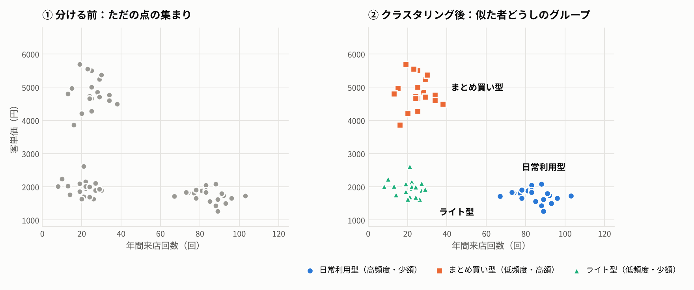
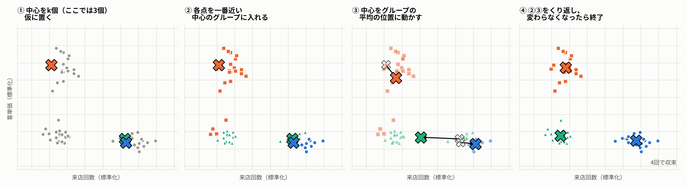
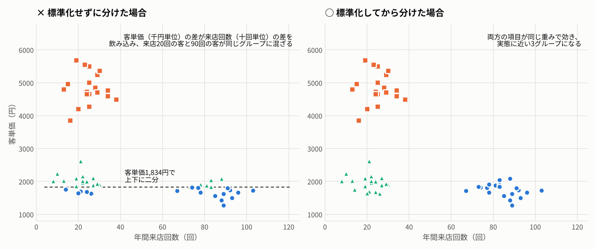
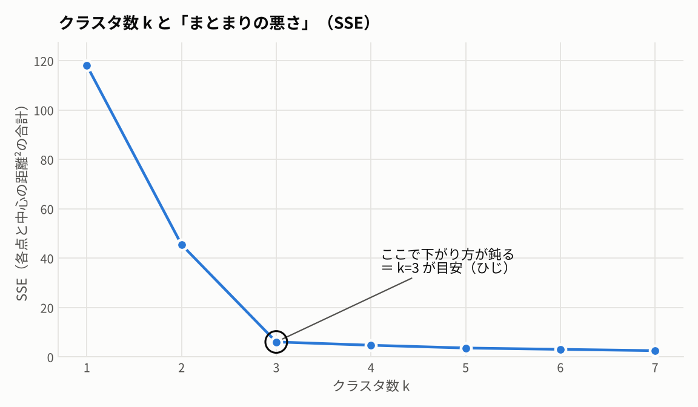

10. 【補足】クラスタリング
正解のないデータを「似たものどうし」に分ける ― Excel で k-means を動かして理解する
10.1. 概要
会員を一律に扱っていては、施策が誰にも刺さらない。客層ごとに打ち手を変えたい。 ところが 「どこで線を引けばグループになるのか」は、誰も教えてくれない。
クラスタリングは、この線引きをデータ自身にやらせる手法です。 項目の値が近いものどうしを集めて、いくつかのまとまり（クラスタ）を見つけます。

左はただの点の集まりですが、来店回数と客単価の2つの軸で見ると、3つの塊があることが分かります。 クラスタリングはこの塊を自動で見つけ、それぞれに番号を振ります。
10.2. 「分類」との違い
分類（教師あり学習） |
クラスタリング（教師なし学習） |
|
|---|---|---|
正解ラベル |
ある（過去データに答えが付いている） |
ない |
問い |
「これは A か B か」 |
「どんなグループがあるか」 |
例 |
スパム判定、離反予測、不良品検知 |
顧客セグメント、商品のグルーピング、店舗タイプ分け |
結果の意味 |
あらかじめ決まっている |
人間が解釈して名前をつける |
クラスタリングが出すのは「番号」だけです。それが何者かを決めるのは分析者の仕事です。
10.3. 「似ている」＝「距離が近い」
クラスタリングでは、似ている度合いを 距離 で測ります。 2つの項目（来店回数 x、客単価 y）なら、平面上の直線距離です。
距離 = √（ (x₁ − x₂)² + (y₁ − y₂)² ）
項目が3つ以上でも、同じように差の2乗を足してルートを取るだけです。
10.4. k-means の仕組み
最もよく使われる手法が k-means（k平均法） です。やることは4ステップしかありません。

中心を k 個、仮に置く（k はグループの数。分析者が決める）
各点を、一番近い中心のグループに入れる
中心を、そのグループの平均の位置に動かす
②と③をくり返し、グループ分けが変わらなくなったら終了
図の①では、2つの中心がたまたま右下の塊に重なって置かれています。 それでもくり返すうちに中心が移動し、4回目で3つの塊に収まりました。
10.5. 使う前の3つの注意
10.5.1. 単位をそろえる（標準化）
来店回数は「数十回」、客単価は「数千円」の単位です。このまま距離を計算すると、 数字の大きい客単価の差が距離のほとんどを占め、来店回数がほぼ無視されます。

左は標準化せずに分けた結果です。客単価だけで上下に輪切りにされ、 来店20回の客と90回の客が同じグループに混ざっています。
対策は、各項目を 平均0・標準偏差1 にそろえる「標準化」です。Excel では次の数式で一発です。
=STANDARDIZE(値, 平均, 標準偏差)
10.5.2. k（グループ数）の決め方
k を増やせば各点は中心に近づくので、「まとまりの悪さ（SSE）」は必ず下がります。 大事なのは 下がり方が急に鈍くなる点 です。ここを「ひじ（エルボー）」と呼び、k の目安にします。

この例では k=3 で一気に下がり、それ以降はほとんど変わりません。
ただしエルボーは目安です。最後は 「その数のグループに、別々の施策を打てるか」 で決めます。 10グループに分けても、10通りの施策を回せなければ意味がありません。
10.5.3. 初期値で結果が変わる
k-means は最初に置いた中心の位置によって、違う答えに落ち着くことがあります。 初期値を変えて何回か実行し、SSE が一番小さい結果を採用するのが基本です。
デモファイル クラスタリングEXCEL
10.6. 結果の読み方
クラスタ |
人数 |
来店回数の平均 |
客単価の平均 |
年間購入額の目安 |
名前（人間がつける） |
|---|---|---|---|---|---|
2 |
20 |
84.6回 |
1,741円 |
約14.7万円 |
日常利用型 |
3 |
20 |
25.3回 |
4,861円 |
約12.3万円 |
まとめ買い型 |
1 |
20 |
20.9回 |
1,946円 |
約4.1万円 |
ライト型 |
名前がついて初めて施策の議論ができます。
日常利用型 — 既に頻繁に来ている。1回あたりの買い上げを少し伸ばす（ついで買いの提案）
まとめ買い型 — 購入額は大きいが来店は少ない。来店の間隔を詰める（週1回の来店動機）
ライト型 — 頻度も単価も低い。まず来店のきっかけを作る
年間購入額で見ると日常利用型とまとめ買い型はほぼ同じですが、買い方がまったく違うので打ち手も違う。 購入額のランクだけでは見えなかった違いです。
10.7. 注意点
落とし穴 |
何が起きるか |
対策 |
|---|---|---|
標準化を忘れる |
単位の大きい項目だけで分かれる |
必ず STANDARDIZE してから距離を計算 |
クラスタ番号に意味を読む |
番号は実行のたびに入れ替わる |
番号ではなく、平均値の表で特徴を読む |
似た項目を両方入れる |
「来店回数」と「購入金額」を入れると、来店の影響が二重に効く |
意味の重なる項目はどちらかに絞る |
見た目のきれいさで k を決める |
施策が回らない数のグループができる |
「打てる施策の数」で上限を決める |
結果を「原因」と読む |
クラスタリングは「似ている」を示すだけ |
なぜその層ができたかは別途検証する |
10.8. まとめ
クラスタリングは、正解のないデータを「似たものどうし」に分ける手法
k-means は 「近い中心に入れる → 中心を平均に動かす」をくり返すだけ
使う前に 標準化、k は エルボー＋施策の数 で決める
出てくるのは番号だけ。平均値の表を読んで名前をつけ、施策につなげるまでが分析